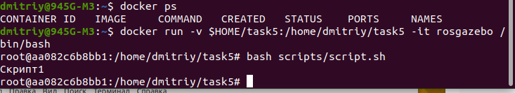
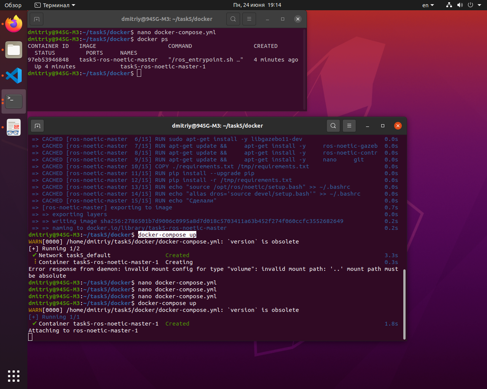
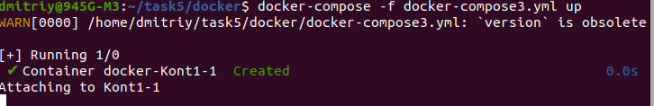
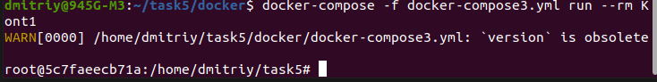

sudo apt-get update
sudo apt-get install ca-certificates curl gnupg
sudo install -m 0755 -d /etc/apt/keyrings
sudo curl -fsSL https://download.docker.com/linux/ubuntu/gpg -o /etc/apt/keyrings/docker.asc
sudo chmod a+r /etc/apt/keyrings/docker.asc
echo \
sudo apt-get update
"deb [arch=$(dpkg --print-architecture) signed-by=/etc/apt/keyrings/docker.asc] https://download.docker.com/linux/ubuntu \
$(. /etc/os-release && echo "$VERSION_CODENAME") stable" | \
sudo tee /etc/apt/sources.list.d/docker.list > /dev/null
Устанавливаю пакеты Docker:
sudo apt-get install docker-ce docker-ce-cli containerd.io docker-buildx-plugin docker-compose-plugin
Docker Engine установил.
Чтобы не выполнять каждый раз команду docker через sudo:
sudo groupadd docker
sudo usermod -aG docker $USER
newgrp docker
Установка Docker Compose:
В последний раз, как устанавливал: на этой странице посмотрел последнюю версию (v2.27.1), скопировал и вставил в команду номер версии (красным цветом, что я вставил):
sudo curl -L "https://github.com/docker/compose/releases/download/v2.27.1/docker-compose-$(uname -s)-$(uname -m)" -o /usr/local/bin/docker-compose
Второй и более понятный способ: страница релизов → Tags → Downloads. Копируем путь, вставляем в команду, между кавычками:
sudo curl -L "https://github.com/docker/compose/releases/download/v2.27.2/docker-compose-linux-x86_64" -o /usr/local/bin/docker-compose
Далее:sudo chmod +x /usr/local/bin/docker-compose
docker-compose --version или docker-compose version
2. Разработка простой программы:
mkdir scripts
Баш скрипт:
#!/bin/bash
echo "Скрипт1"
Репозиторий:
Создал репозиторий https://github.com/DmitriyZubkov41/task5.
3. Создание образа для программы:
Меня заинтересовал проект Антона Писаренко - Простая имитационная модель мобильного робота в ROS и Gazebo.
dmitriy@945G-M3:~$ mkdir task5
dmitriy@945G-M3:~$ cd task5
dmitriy@945G-M3:~/task5$ mkdir docker
dmitriy@945G-M3:~/task5$ cd docker
dmitriy@945G-M3:~/task5/docker$ nano Dockerfile
раскрыть код Dockerfile
# Строим на базе ROS 1 версия noetic-desktop
# Эта версия - последняя поддерживаемая в ubuntu 20.04
FROM osrf/ros:noetic-desktop
# set environment variables
ENV PYTHONDONTWRITEBYTECODE 1 # Предотвращает создание .pyc файлов
ENV PYTHONUNBUFFERED 1 # Предотвращает буферизацию вывода Python, улучшая логирование
#Этот блок вроде предназначен для тех кто имеет в компьютере графический чипсет от NVIDIA
# Поэтому думаю можно все закомментировать
# nvidia-container-runtime
#ENV NVIDIA_VISIBLE_DEVICES \
# ${NVIDIA_VISIBLE_DEVICES:-all}
#ENV NVIDIA_DRIVER_CAPABILITIES \
# ${NVIDIA_DRIVER_CAPABILITIES:+$NVIDIA_DRIVER_CAPABILITIES,}graphics
# set work directory
#RUN mkdir /workspace/src/mobile_robot_base_ros1 -p
WORKDIR /home/dmitriy/task5
# Additional commands (installing dependencies)
RUN apt-get update && \
apt-get install -y \
curl \
wget \
python3-pip \
python3-tk # Пакеты длля tkinter
# Gazebo 11
RUN sudo sh -c 'echo "deb http://packages.osrfoundation.org/gazebo/ubuntu-stable `lsb_release -cs` main" > /etc/apt/sources.list.d/gazebo-stable.list'
RUN wget https://packages.osrfoundation.org/gazebo.key -O - | sudo apt-key add -
RUN sudo apt-get install -y libgazebo11-dev
# RUN sudo apt-get install -y ros-noetic-gazebo-ros
# RUN sudo apt-get install -y gazebo11
# Дополнительные пакеты Gazebo для работы с ROS
# RUN curl -sSL http://get.gazebosim.org | sh
RUN apt-get update && \
apt-get install -y \
# gazebo11 \
# libgazebo11-dev
ros-noetic-gazebo-ros \
ros-noetic-gazebo-ros-pkgs \
ros-noetic-gazebo-ros-control
# Установка дополнительных пакетов ROS для управления и работы с роботами
RUN apt-get update && \
apt-get install -y \
ros-noetic-control-toolbox \
ros-noetic-realtime-tools \
ros-noetic-ros-controllers \
ros-noetic-xacro \
python3-wstool \
ros-noetic-tf-conversions \
ros-noetic-kdl-parser \
liburdfdom-tools
# Установка инструментов для разработки
RUN apt-get update && \
apt-get install -y \
nano \
git \
tmux \
tree
# Установка зависимостей Python
COPY ./requirements.txt /tmp/requirements.txt
RUN pip install --upgrade pip
RUN pip install -r /tmp/requirements.txt
# Настройка bashrc
RUN echo "source /opt/ros/noetic/setup.bash" >> ~/.bashrc
RUN echo "alias dros='source devel/setup.bash'" >> ~/.bashrc
RUN echo "Сделали"
4. Запуск и тестирование программы в Docker-контейнере:

5. Docker Composeраскрыть код docker-compose.yml
version: '2' # Docker Compose version v2.27.1
name: task5 # Имя проекта
services: # Definition of services to be run in containers
ros-noetic-master: # Service name
build: # Instructions for building the image
context: ../ # Build context, the base directory for building
dockerfile: ./docker/Dockerfile # Path to the Dockerfile relative to the context
working_dir: /home/dmitriy/task5 # Working directory inside the container
volumes: # Volumes attached to the container
- /home/dmitriy/task5 # Mounting the project folder from the host to the container
env_file: # Environment variables file
- ./.env # Path to the environment variables file
tty: true # Enable TTY mode, allowing the use of an interactive terminal in the container
cd docker
docker-compose build
docker-compose up
Результат: 
Результат не очень интересный, создали контейнер и присоединились к нему.
Теперь моя версия docker-compose3.yml:
раскрыть код docker-compose3.yml
version: '2'
services:
Kont1:
image: rosgazebo
volumes:
- $HOME/task5:/home/dmitriy/task5
stdin_open: true # docker run -i
tty: true # docker run -t
command: /bin/bash && bash scripts/script.sh
#command: bash ./scripts/script.sh
Команда: docker-compose -f docker-compose3.yml up

Контейнер не запустился.
Команда: docker-compose -f docker-compose3.yml run --rm Kont1

Есть контейнер, но нет выполнения скрипта.